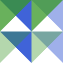
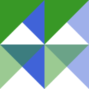

Blending and Compositing
Types for specifying modes
ColorBlendModes defines two types for specifying modes: BlendMode for the mixing of opaque colors, and CompositeOperation for the generalized alpha compositing.
The users typically do not need to handle these types directly. Instead, the users can handle the predefined singleton instances of those types, e.g. BlendMultiply, BlendScreen and BlendOverlay for BlendMode, or CompositeSourceOver and CompositeSourceAtop for CompositeOperation. See Blend Modes and Composite Operations for all supported modes and their examples. Note that these predefined constants look like types, but are just instances.
ColorBlendModes.BlendModes.BlendMode — TypeBlendMode{mode}A type used for specifying the mixing mode of opaque colors. The mode should be a symbol.
ColorBlendModes.CompositeOperations.CompositeOperation — TypeCompositeOperation{op}A type used for specifying the Porter-Duff operator, or the mode of generalized alpha compositing. The op should be a symbol.
Blending and compositing function
The blend function creates the mixed color of two colors based on the specified blend mode and composite operation.
ColorBlendModes.blend — Functionblend(c1, c2; mode=BlendNormal, opacity=1, op=CompositeSourceOver)Create the mixed color of two colors c1 and c2. The c1 means the backdrop color and the c2 means the source color.
mode specifies the blend mode, e.g. BlendMultiply.
opacity modifies the source (i.e. c2-side) alpha by multiplication.
op specifies the composite operations, e.g. CompositeSourceAtop.
The return type is the same as c1.
Examples
julia> blend(RGB(1, 0.5, 0), RGB(0, 0.5, 1), mode=BlendLighten)
RGB{Float64}(1.0,0.5,1.0)Broadcasting
The blend function is compatible with the broadcasting. Therefore, you can blend two images with the same size.
julia> image1 = [RGB(r, 1, b) for r=0:1, b=0:1]
2×2 Array{RGB{N0f8},2} with eltype RGB{N0f8}:
RGB{N0f8}(0.0,1.0,0.0) RGB{N0f8}(0.0,1.0,1.0)
RGB{N0f8}(1.0,1.0,0.0) RGB{N0f8}(1.0,1.0,1.0)
julia> image2 = [RGB(r, g, 0) for g=0:1, r=0:1]
2×2 Array{RGB{N0f8},2} with eltype RGB{N0f8}:
RGB{N0f8}(0.0,0.0,0.0) RGB{N0f8}(1.0,0.0,0.0)
RGB{N0f8}(0.0,1.0,0.0) RGB{N0f8}(1.0,1.0,0.0)
julia> blend.(image1, image2, mode=BlendMultiply)
2×2 Array{RGB{N0f8},2} with eltype RGB{N0f8}:
RGB{N0f8}(0.0,0.0,0.0) RGB{N0f8}(0.0,0.0,0.0)
RGB{N0f8}(0.0,1.0,0.0) RGB{N0f8}(1.0,1.0,0.0)Also, by using broadcast assignment (.=), you can do in-place blending, i.e. avoid allocating new arrays.
julia> buf = similar(image1); # allocate an output array in advance
julia> buf .= blend.(image1, image2, mode=BlendLighten)
2×2 Array{RGB{N0f8},2} with eltype RGB{N0f8}:
RGB{N0f8}(0.0,1.0,0.0) RGB{N0f8}(1.0,1.0,1.0)
RGB{N0f8}(1.0,1.0,0.0) RGB{N0f8}(1.0,1.0,1.0)
julia> @. buf = blend(buf, image2, mode=BlendDifference) # `@.` macro may be useful
2×2 Array{RGB{N0f8},2} with eltype RGB{N0f8}:
RGB{N0f8}(0.0,1.0,0.0) RGB{N0f8}(0.0,1.0,1.0)
RGB{N0f8}(1.0,0.0,0.0) RGB{N0f8}(0.0,0.0,1.0)Opacity
The keyword argument opacity controls the alpha of source color c2. If c2 is an opaque color, the opacity is used as the source alpha. If c2 is a transparent color, opacity * alpha(c2) is used as the source alpha. The opacity is useful when used with broadcasting, i.e. the opacity acts as so-called "layer opacity".
The following are examples where an image of green triangles (image_green) is layered on an image of blue triangles (image_blue).
image_green = load("green.png")
image_blue = load("blue.png")
for mode in (BlendNormal, BlendMultiply, BlendScreen)
for opacity in (25, 50, 75, 100)
out = blend.(image_blue, image_green, mode=mode, opacity=opacity/100)
save(keyword(mode) * "_" * string(opacity) * ".png", out)
end
end| blend mode | opacity=0.25 | opacity=0.5 | opacity=0.75 | opacity=1.0 (default) |
|---|---|---|---|---|
| normal |  |  | ||
| multiply |  |  | ||
| screen |  |  |
The opacity is typically specified in the range [0,1]. A value out of the range can be specified, but the blend function does not clip the intermediate values. Therefore an arbitrary color may be returned.
Calling with singleton instances
For convenience, the instances of BlendMode and CompositeOperation are callable. They are equivalent to the blend function, with the instance assigned to the keyword argument mode or op.
julia> c1 = RGBA(1, 0.5, 0, 0.5); c2 = RGB(0, 0.5, 1);
julia> BlendMultiply(c1, c2) === blend(c1, c2, mode=BlendMultiply)
true
julia> CompositeSourceOver(c1, c2) === blend(c1, c2, op=CompositeSourceOver)
true
julia> BlendDarken(c1, c2, opacity=0.25, op=CompositeSourceAtop)
RGBA{Float64}(0.75,0.5,0.125,0.5)
julia> CompositeSourceAtop(c1, c2, opacity=0.25, mode=BlendDarken)
RGBA{Float64}(0.75,0.5,0.125,0.5)However, it is not recommended to call the predefined constants directly, e.g. BlendMultiply(c1, c2). They are should be called via method arguments or local variables.
Avoiding name clashes
The main function of this package, blend, is a generic word and is therefore at risk of name clashes. The BlendMode, CompositeOperation and their singleton instances are defined in sub-modules called BlendModes and CompositeOperations, and hence you can introduce the set of definitions optionally. Note the presence of the plural s at the end.
julia> blend(a, b) = (a + b) / 2;
julia> using ColorTypes;
julia> import ColorBlendModes; # instead of `using`
julia> using ColorBlendModes.BlendModes, ColorBlendModes.CompositeOperations;
julia> blend(0, 1) # does not clash
0.5
julia> ColorBlendModes.blend(Gray(1), Gray(0), mode=BlendLighten, op=CompositeSourceOver)
Gray{N0f8}(1.0)